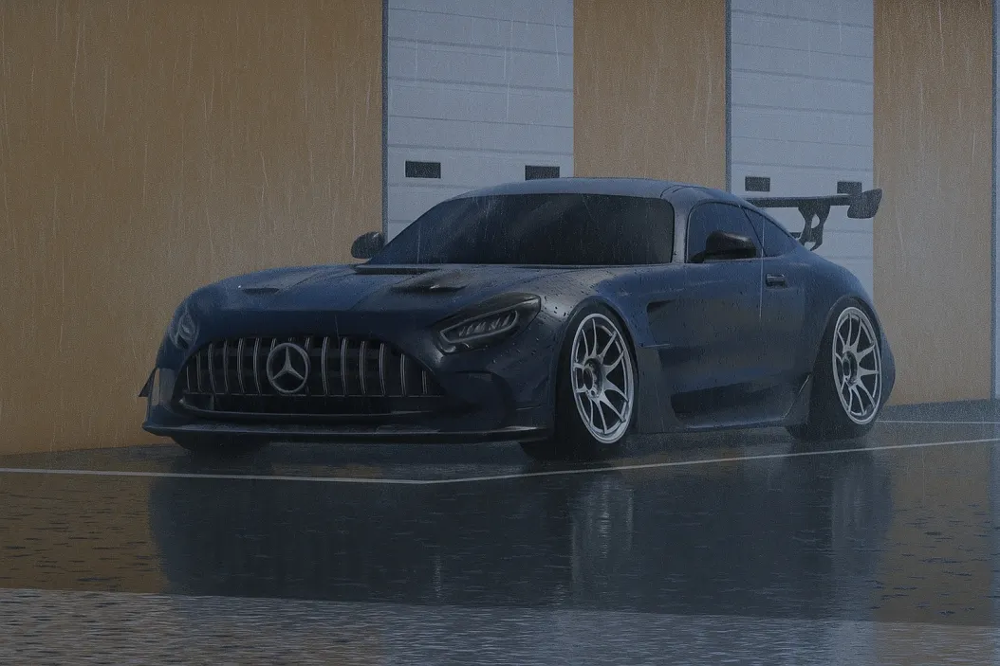
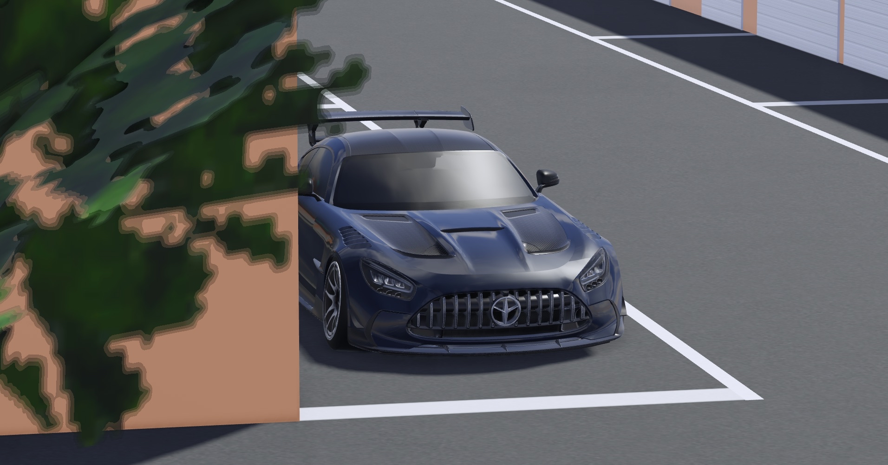
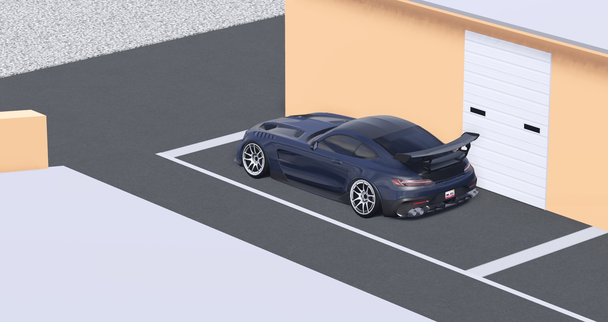

When most people think of the AMG GT Black Series, they imagine a Nürburgring time attack weapon, i.e., a machine engineered with precision, obsessive aero, and a whole lotta German beans.
Ant probably got that version…
Or maybe not.
Because what you’re about to see is something a little more interesting.
This GT Black Series isn’t the purist-spec track car that bows to AMG heritage. (At least that’s my view.)
This one is a built car, painted navy blue and tuned for one thing, fun that makes purists cry a little…

Let's break the build down:
Essentially, it's stage 3 everything — because more power = more spinny wheels.
It's got a clean set of Gunmetal Work Emotion Kiwamis and a Navy blue paint to go with.
This setup transforms the Black Series from “track monster” into something closer to that one McLaren P1 with the 20B 3-rotor swap.
Yes, that level of disrespect to the original engineering.
It’s the kind of car that makes purists audibly gasp and whisper, “But… the aero… the engineering…” while Ant is already sideways through a corner the car was never meant to drift.
And honestly? I fw that.
Anyways, during the talk with Ant, he said something:
“If I had the SLS Black Series, that would complete the collection.”
And I assure you, if he did, it’d be featured in this blog instead of the AMG GT Black Series for sure!

So, here’s my message at the end of the Blog:
It’s bold.
It’s chaotic.
It’s stylish in its own rule-breaking way.
Purists can look away.
Everyone else?
Enjoy the side-view!
Stay AOI // Stay Driven // Stay Connected